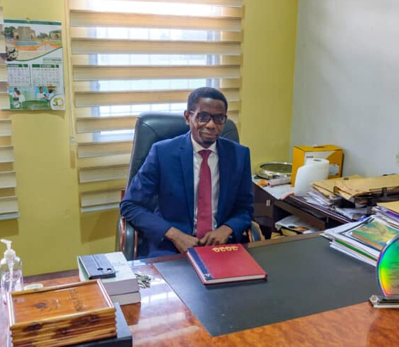

Suncity Chamber of Commerce for Health
Audience
People in need of medical assistance, surgery, or cancer are the major audience of the Suncity Chamber of Commerce for Health. This site is here to help you because health problems impact people of all ages, young and old. Because of the difficult living conditions in rural areas, people in these locations are the most likely to be targeted. At heart, older people are also. This organization is dedicated to assisting our aging grandparents.
Scenario 1
How do I apply for medical assistance?
Visit the site and submit your information in the comment field, or come to our Suncity office. You can also contact us using the information in our contact section.
Scenario 2
How difficult would it be for a user to browse the site?
The page will have a simple user interface that can be navigated with ease.
Scenario 3
What layout did you use to create this site?
The layout will consist of a grid of columns and rows that can be readily customized to reflect the page's purpose and content.
Scenario 4
Is there another way to see the site, such as in a different viewport?
Yes, the site will be built from three perspectives. Small and large devices are supported.
Scenario 5
How can I support this organization?
The association is seeking local and international support. You can help by contacting us or sending us a proposal, and you will hear from us.
Persona 1
Name
Pastor Yaw Asamoah Kwarteng
Job title
President, Central Ghana Conference of Seventh-Day Adventist Church
Demographics
- 56 years old
- Married
- Father of three children
- President
Environment
For the online church organization, he is at ease with computers and many technologies. During his workday, he utilizes email extensively and spends roughly 2 hours on the internet.
Persona 2
Name
Dr. Randolph Baah
Job title
Specialist Obstetrician Gynecologist
Demographics
- 32 years old
- Single
- Senior Specialist
Goals and tasks
He is a capable, dedicated leader in a critical position. He has a way of converting difficult activities into simple one, which is one of his goals.
Environment
He is proficient with a computer. At work, he uses the hospital WiFi connection, while at home, he uses dial-up. During his workday, he spends roughly 10 hours on the internet.